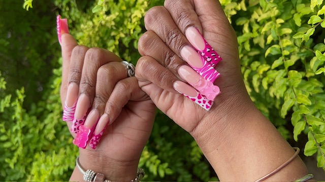

Blue Print Talks Latest Trend
The latest trend for 2024 in the nail world is 3D design. From the elegant flowers, floral, daisy, abstract so many to name. Jas owner of Blue Print Nails says the latest trend that appeals to her is animal print and French tip freestyle. Freestyle is a way to express not only the nail art talent but also the client’s boldness.
Hey girl ! Hey ! Lets talk nails with Blue Print Nails By Jas . Jas lives for nails and it shows in her artwork. 3 Words jas describes her personality to be is Blunt, Observant and Loud like her nails lol. Now that is true! Her work is loud, bold and unique, her creativity is on another level and a perfectionist at its best. She became a nail tech because she saw that she could provide something that others couldn’t and wanted to make every woman feel pretty and well serviced. Whether it's light snacks, wine, girl talk she aims to please.
Nail Talk
Trending Now
- Bold & Bright
- Trend
- Texture Play
- Minimalist Nails
- Nature Inspired